Notepad Forge
A native code and text editor for Mac, built for Apple Silicon.
Everything you expect from a power editor
- Syntax highlighting for 62 languages, plus languages you define yourself
- Find and replace with full regular expressions, Find in Folder and five mark styles
- Macros, a column editor, multiple cursors, bookmarks and split view
- Side-by-side compare and a live Markdown preview
- Password-protected notes, encoding detection and EditorConfig
- In English, Arabic, Spanish, German and French